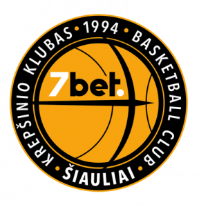

Šiaulių „Šiauliai-7bet“

Įkūrimo data: 1984 metai
Vyr. treneris: Antanas Sireika
Komandos sudėtis:
- Martynas Varnas
- Eimantas Stankevičius
- Ernestas Jonkus
- Arminas Urbutis
- Donatas Sabeckis
- Daniel Baslyk
- Kajus Leliukas
- Giedrius Staniulis
- Nemanja Bezbradica
- Isaiah Armwood
- Jonathan Elmore
- Mantas Litvinas
- Paulius Danusevičius
- Jonas Paukštė
www.bcsiauliai.lt >
Atgal